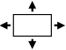

Operating Documentation
Direction 5440001-3, Rev# 6
Signa HDxt Service Methods
Module Version 1.0, Version Date 5/3/07
Operating Documentation |
| Required Persons | Preliminary Reqs | Procedure | Finalization |
|---|---|---|---|
| 1 |
The NEC 2010X LCD Panel Display does not have an RGB (BNC) style input. The video cabling uses an S-VGA type connection. It also has additional DVI/D-SUB input capability. This feature allows for the switching of inputs between two LCD Monitors, (Not Used by GE). The AC power source transformer has also been eliminated. A standard AC power cord is supplied, that plugs directly into a 110Vac power.
| NOTE: | Adjustment information is not lost when the power is removed from the monitor |
| ||||
| The NEC 2010X .(CAT # M1000NZ) when ordered from GE Medical Systems, Inc. will come with a specially designed S-VGA type cable. If you are replacing the current NEC LCD with the 2010X model, you must replace the RGB type video cable with the S-VGA cable provided by GE. This is not a standard S-VGA cable! It cannot be purchased locally. If a standard S-VGA cable is used, patient diagnostic image quality will be impacted. | ||||
The functions of the OSMä controls on the front of the monitor are described
in Table 10-1. To access the OSM, press any of the control buttons  or
the PROCEED or EXIT button.
or
the PROCEED or EXIT button.
| NOTE: | When RESET is pressed, a warning window will appear allowing you to cancel the reset function. |
Table 1: FRONT PANEL CONTROL FUNCTIONS - MODEL LCD2010
| Control | Main Menu | Sub-Menu |
| EXIT | Exits the OSMTM controls. | Exits to the OSMTM controls main menu. |
CONTROL  | Used to access main menu. Moves the highlighted area up/down to select one of the controls. | Moves the highlighted area up/down to select one of the controls. |
CONTROL  | Has no function | Moves the bar in the + or - direction to increase or decrease the adjustment |
| PROCEED | Proceeds to the selected menu choice (indicated by the highlighted area). | Activates Auto Adjust feature.In Display Mode, opens additional window. |
| RESET: The currently highlighted control to the factory setting | Resets all the controls within the highlighted menu. | Resets the highlighted control. |
Continue to On-Screen Controls.
This section describes the adjustments available for the OSM controls.
Brightness and Contrast 
Brightness: Adjusts the overall image and background screen brightness.
Contrast: Adjusts the image brightness in relation to the background.
Auto Adjust Contrast: Adjusts the image displayed for non-standard video inputs.
Auto Adjust 
Automatically adjust the Image Position or the H. Size setting.
Position Controls 
“H” Position: Controls Horizontal Image Position within the display area of the LCD.
“V” Position: Controls Vertical Image Position within the display area of the LCD.
Auto: Automatically sets the horizontal and vertical image position within the display area of the LCD.
Image Adjust Controls 
“H” Size: Adjusts the horizontal size by increasing or decreasing this setting.
Fine: Improves focus, clarity, and image stability by increasing or decreasing the Fine setting.
Auto Adjust Coarse: Automatically adjusts the Coarse setting.
AccuColor® Control System 
Five color presets select the desired color setting. This setting must be set to selection 1 - 9300. If a setting is adjusted, the name of the setting will change to Custom.
R, B, G: Increases or decreases the color depending upon which is selected. The change in color will appear on screen and the increase or decrease will be shown by the color bars.
Tools 1 
You can choose where the OSM control image appears on the screen. Selecting OSM Location allows you to manually adjust the position.
Smoothing - (Normal) Default
Expansion Mode- (Full Screen) Default
Video Detect- (First Detect) Default
DVI Selection- (Default) No effect on S-VGA systems.
Sound- Minimum (Default)
Tools 2
You can choose where the OSM control image appears on the screen. Selecting OSM Location allows you to manually adjust the position. Normally, no adjustment is necessary. Use default values.
Language- English
OSM Position- Default location
OSM Turn OFF- Default
OSM Lock Out
This control completely locks out access to all OSM control functions. When attempting to activate controls while in Lock Out mode, a message screen will appear indicating that the controls are locked out.
To enter the Lock Out mode, simultaneously press <PROCEED> and
the  button; the LOCK OUT window will appear.
button; the LOCK OUT window will appear.
To activate the Lock Out function, simultaneously press and hold down the <PROCEED> and the button; the OSM window will disappear within seconds and the LOCK OUT function will be activated.
To de-activate the Lock Out function, simultaneously press <PROCEED> and the button.
Factory Preset
This allows you to reset all OSM control settings back to the factory settings. Highlighting the setting and then pressing the <RESET> button can reset individual settings.
Resolution Notifier
Optimal Resolution is 1280x1024. If ON is selected a message will appear on the screen 30 seconds, notifying the user that the resolution is NOT at 1280x1024.
Information 
Indicates the current display resolution, frequency setting, and type of Sync signal of the monitor. All items under this menu should not be changed. Use default values.
| NOTE: | Mode Change should only be used if the monitor does not recognize a resolution. This shouldn’t ever be the case with our system. You can change to the appropriate resolution by selecting the <Mode information> and selecting (increase or decrease) the corresponding option. |
No finalization steps.